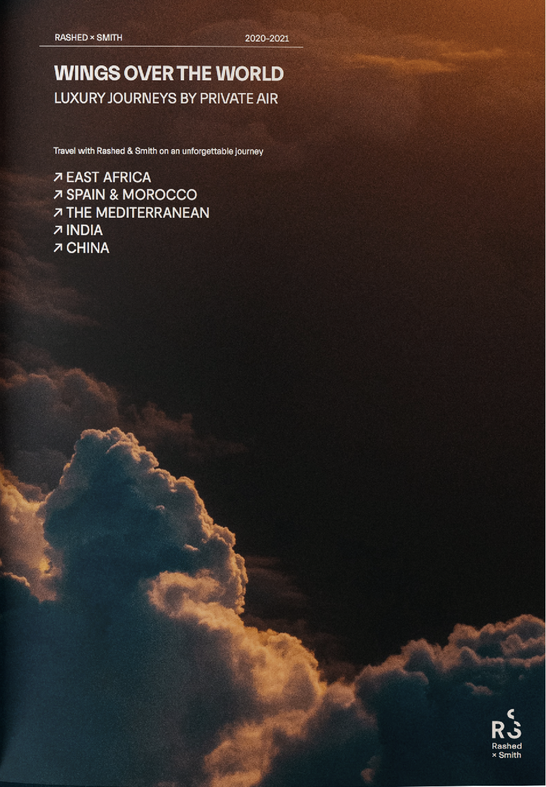

Rashed + Smith
R + S es una guía de lujosos viajes privados, que exhorta al turismo y la cultura a travez itinerarios en cinco destinos alrededor del mundo.
Publicado en 2020
Impresión digital
18 x 25 cm
